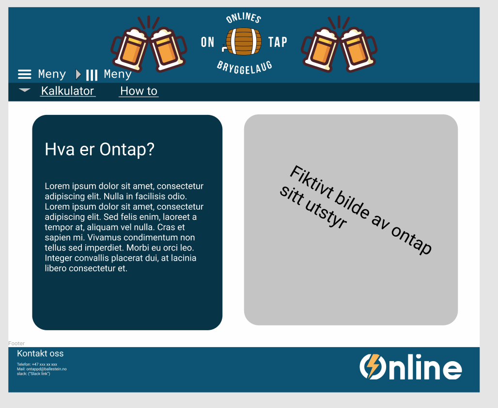

Administrative details
- Group members: Sander, Benjamin, Oskar, Markus and Naqib
- October.7.2021
- Ontap
- Contact for Ontap: Hjalti Hjaltason
Our client is an interest group for informatics students at NTNU Trondheim. Ontap is an interest group for students who like brewing beer. When we got an assignment from our lecturer to build a website. Our group sent an email asking Ontap if they wanted us to build a new website for them. They wanted a website, so we sat up a meeting, where they explained what they were requiring from this website.
Purpose, goals, and audience
The main purpose of this website, is to act as a homepage for the Ontap-group. It will also serve as a toolbox for Ontap-brewers, through the functional requirements of the site. The main goal, is to create a website that will catch the interest of the audience, and make it easier for new ontap-members to get started with the brewing.
Page Layout and Appearance
When we tried to find out our universal design, we had keep in mind that Hjalti wanted the webiste to have the colors of online. This is in order to make sure the users understand that Ontapped is a part of Online. There are also some beers on either side of the logo. This was made in order to show what goes on on the site.

The specific styling for the webpage will be described below.
- Color theme
- Text: Black
- Background: White
- NavBar: rgb(13, 84, 116)
- When you hover over any link on the navigationbar it will turn to a darker shade of blue. rgb(8, 52, 72)
- Bodywidht: 80%
- Font: "Source Sans Pro", sans-serif
- The Navbar: The navigationbar will have links that go to each of the subsections of the website.
- Placement of the Navbar: We have decided to put the navigationbar on the top of the page since thsi is how it is done on Online's page.
- Logo: The logo will be centered on the navigationbar.
- Footer: The footer will have conctact information to reach Ontap on mail, phone and Slack.
Content
Our website will have three separate pages:
-
Homepage.html:
When the users will visit our website, this is the page they will see. In this page our users can read about Ontap and it's history. The footer will contain Ontap's contact informations such as phone nummber, email address and slack link. The same footer will be inculded in every pages of our website. We also inculded Online's logo at the right side of the footer. -
kalkulator.html:
In this page we will have three calculators. Each calculator performs it's specific task. The users can access this page by clicking "kalkulator" on the menue bar -
How to:
In this page we will include som youtube videos on how to brew your own beer.
Minimum Requirements
We plan to fullfil the Minimum requirements in of javascript by making three calculators:
-
Promille kalkulator:
This is a calculator that will allow the users to calculate how much alcohol they have in their bodys. The users have to choose their gender, enter their wieght, when they started to drink and how many drinks they have had. -
ABV% kalkulator:
This calculator will calculate approximately how alcohol our beer will contain after the brewing. -
Pris kalkulator:
This one is a calculator that calculates the price per person. The users have to enter how many people they are that are going to brew together, they also have to enter how many liters of beer they have brewed and how much did it cost in total. The calculator will calculate how many liters of beer every person gets. it will also calculate the price per person and price per liter. -
Slideshow:
This slideshow will be shown at the index page. It will include multiple pictures of equipment that Ontap has available and that the user can borrow, and other pictures that are related to Ontap such as picture. Ontap will supply us with these pictures, so there won’t be any issues with copyright.
Bla bla
Plan
Our plan for building the website consists of delegating tasks between all the programming languages we will be using. The website will need at least 3 HTML documents, 4 javascripts documents and 1 CSS document. We also need to find videoes for our "How to"-page and get photos from Ontappd. We will probably need two people to create the three HTML documents and two people to create the javascripts. The last person can create the the CSS stylesheet which will be used for all the HTML documents.